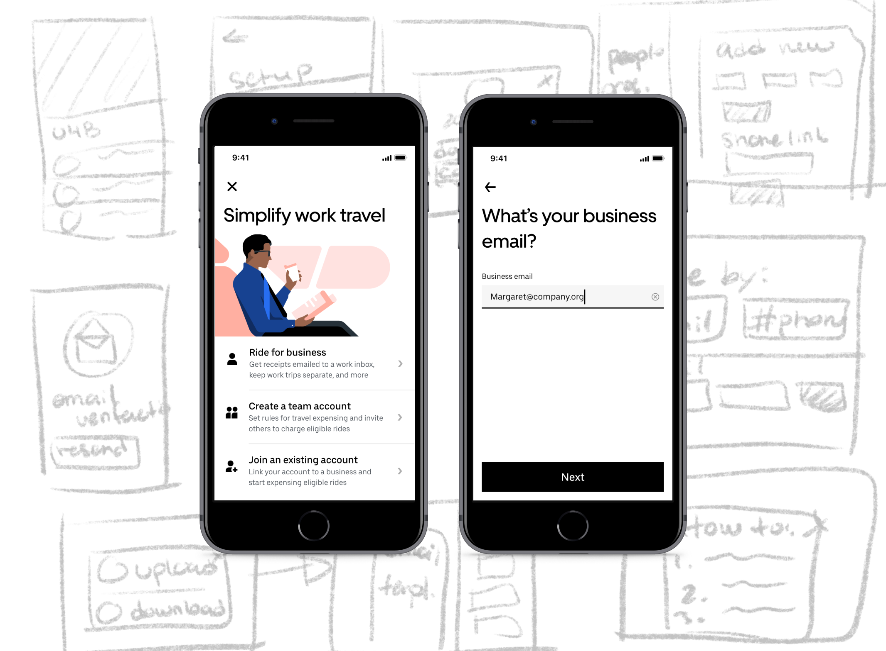
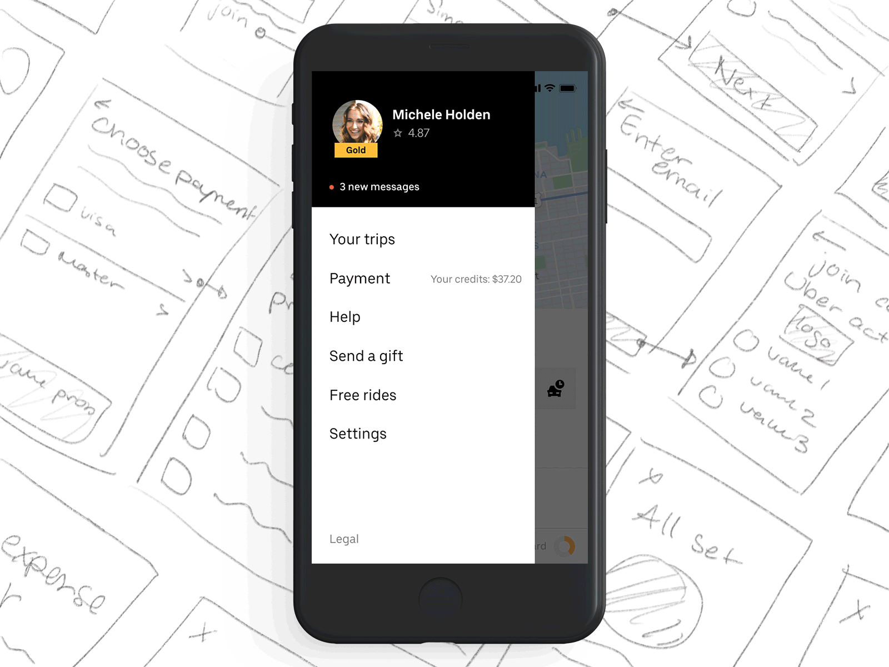
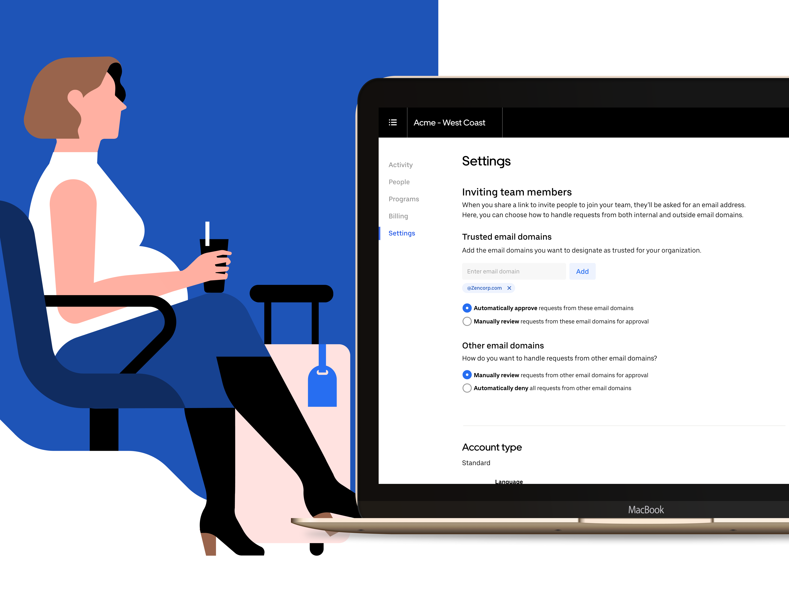

Contact
Say Hello
Have a cool project? Want to get in contact or just want to say hello? Drop me a line.
We started Uber for Business 5 years ago to serve organizations globally, from the enterprise level to single freelancers. Our suite of tools help business travel managers, event managers, health travel administrators, and more provide seamless and reliable rides and food to their employees, guests, patients, and customers. Uber for Business serves thousands of organizations—65,000 specifically—but in order to help small organizations plan their travel more efficiently, we aim to scale our product and hit a few key benchmarks along the way.
Our core offering is simple
As we worked with more and more organizations, we noticed that signing up for an account wasn’t always simple, for organizations or employees. The problem was two-fold: admins experienced friction when trying to add team members to their company account; admins need to upload the email addresses of the individuals they want to add to their Uber for Business account, but it’s easy for the email invitation to get lost in their inboxes. Other times, employees try to join the account but don’t remember their Uber passwords and therefore don't finish signing up.
Methodology
Our approach leveraged user research and data science to help validate our assumptions, paired with knowledge of our customer journey map to ensure we were focusing on the right steps along the way.
We wanted to track down all of the pain points our customers were experiencing by answering key questions.
We gathered feedback from focus groups, interviews, and surveys about our users. We wanted to deeply understand the way they think, their pain points, and motivations for success. We asked questions like: who is the admin? Why did they sign up? Why did they end up not using the product?
The issues
We found that many administrators signed up to spend less time and energy managing travel—reconciliation, accounting, and reimbursements. And even though using Uber for Business would save them time in the long term, their signup experience felt like extra work.
Qualitative: check. Next we aimed to get a holistic view of the problem by quantifying it with data. We ran the numbers and found that organizations took more trips over the lifetime of their account if they constantly add and remove employees to the company’s Uber for Business account. However, a significant number of support tickets highlighted a cumbersome invite process, and few admins returned to the platform to add more employees to the program.
Identifying the problem
Symptoms of a problem sometimes surface in one point of the flow when the core issue lies in another part, potentially causing several symptoms in more than one part. To better understand the core problem, we revisited the user’s journey.
We found that administrators were adding employees to their business account as part of their new hire process, but employees just joining a new company had no idea if they would be traveling for work, and as such, might not need to immediately register with their company’s Uber for Business account. In these cases, the email invite got lost in the shuffle of other welcome emails.
Some of these employees reported that they were averse to signing in with their personal Uber account to create their business profiles.

ur problem can essentially be boiled down to one analogy: imagine that there are two people and a big pile of rocks that need to be moved. Both people would benefit from the rocks being moved, and they could both help carry them, but for some reason, only one person is doing the carrying. Whether or not this is fair, it is definitely inefficient. It would be better for administrators and employees alike if the Uber for Business sign-up and linking experiences were more efficient, but with our previous invite flow, the admin was doing all of the work setting up the account.
Designing the process to design a solution is something of a tongue twister, but it’s also something we don’t take lightly. Our process starts with a design jam session to generate concepts from all stakeholders and collaborators. In these sessions, we introduce the problem and relevant research. We bring in the same journey map from the research to act as visual guidance for focus areas. In the end, we translate the problem to data points so that we know which metrics to change and how to measure success. Now we’re jammin’.
After the jam session, we take those ideas and distill them down to the ones that are most viable, technically and financially. The team then prioritizes concepts. Next, we wireframe the whole flow, figure out edge cases, and make magic happen!
Solution 1—getting on the guest list
Our first concept focused on getting employees to join their company’s Uber for Business account directly through the Uber app. When someone requested a ride to a company using Uber for Business, we’d serve a popup asking if they worked at that company. If so, we’d send them an invite to join their company’s account on the platform. We soon found, though, that relying on physical addresses was problematic because many office buildings have multiple tenant companies.
We also tried giving admins email templates they could use to send employees invites to join the company account. This was a classic case of a counterproductive solution: the intent was to make things easier for the admins, but we observed that downloading and filling out set templates was more work, not less. So templates were out, too.
Now, employees didn’t have to accept an email invitation to join the account. They could just opt into the account whenever they were ready through the Uber app, without having to sign in on a web landing page, as they’d previously needed to do.
Solution 2—picking out the red Skittles
Similar to solution 1, we looked outside of our product for inspiration on how to best “invite” new users to the platform. Again, we found a method that illustrated our current invite flow, and a second that served as inspiration for what our flow could be like.

Which one would require less effort for the event host? Our second solution was centered around a method of allowing admins to notify all employees of their Uber for Business account without having to individually go in and add each employee’s email to the account. We gave them a link that they could share on a team page or travel document.
Conclusion
This conclusion is difficult to label as a “conclusion” because design at Uber is a process and never truly ends. But this story represents a small victory on the road, as we were able to use design (and jam sessions) to rehabilitate the essential sign up and linking process. Even with that success, we can expect to redo this design again and again — making the onboarding flow a little bit better each time. Time goes on, customers change, needs change, businesses change, and like everything else, good products must also change to adapt to the needs of their users.
See article on MediumHave a cool project? Want to get in contact or just want to say hello? Drop me a line.